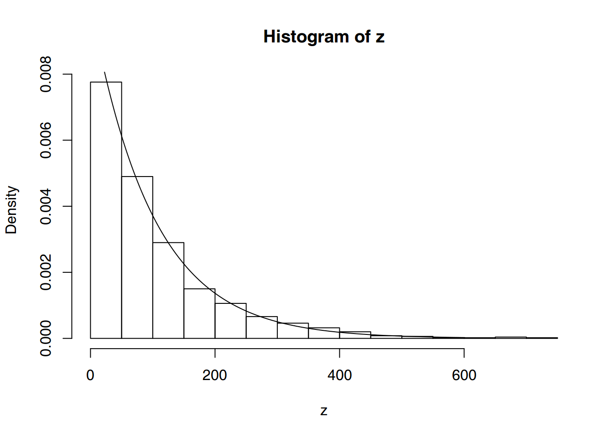

Iniciación a R
Proyecto R
¿Qué es R?
R es un lenguaje de programación para entorno estadístico y gráficos. La base del proyecto se encuentra en la siguiente dirección:
En esta dirección podremos descargar la última versión del programa así como acceder a toda la documentación, paquetes y librerías anexas, foros y otros proyectos relacionados.
Se trata de un proyecto de software libre, resultado de la implementación GNU del premiado lenguaje S. R y S-Plus -versión comercial de S- son, probablemente, los dos lenguajes más utilizados en investigación por la comunidad estadística, siendo además muy populares en el campo de la investigación biomédica, la bioinformática y las matemáticas financieras. R se distribuye bajo la licencia GNU GPL y está disponible para los sistemas operativos Windows, Macintosh, Unix y GNU/Linux.
CRAN
El mantenimiento del Proyecto R se realiza a traves del CRAN The Comprehensive R Archive Network donde se encuentran las últimas versiones del programa R y los paquetes anexos. Esta información se almacena en los Mirror1. Estas réplicas u espejos se suelen crear para facilitar grandes descargas y facilitar el acceso a la información aun cuando haya fallos en el servicio del servidor principal. El listado oficial puede consultarse aquí CRAN mirrors.
Propiedades
La capacidad de combinar, sin fisuras, análisis preempaquetados con análisis ad-hoc, específicos para una situación: capacidad de manipular y modificar datos y funciones.
Los gráficos de alta calidad: visualización de datos y producción de gráficos para artículos.
La comunidad de
Res muy dinámica, con gran crecimiento del número de paquetes, e integrada por estadísticos de gran renombre (ej., J. Chambers, L. Terney, B. Ripley, D. Bates, ).Hay extensiones específicas a nuevas áreas como bioinformática, geoestadística y modelos gráficos.
Es un lenguaje orientado a objetos.
Instalación
Depende del sistema operativo, pero todo se puede encontrar en
http://cran.es.r-project.org/bin
Para Windows se puede obtener un ejecutable desde
http://cran.es.r-project.org/bin/windows/base
Al ejecutar el archivo se instalará el sistema base y los paquetes recomendados.
Paquetes
R consta de un sistema base y de paquetes adicionales que extienden su funcionalidad. Podemos encontrarlos en
http://cran.es.r-project.org/src/contrib/PACKAGES.html
Tipos de paquetes:
Los que forman parte del sistema base: ctest, graphics, … .
Los que no son parte del sistema base, pero son recommended: xlsx, survival, nlme, … .
Otros paquetes (UsingR, foreing, … ). éstos se han de seleccionar e instalar individualmente.
Documentación
Los manuales de R, incluidos en toda instalación.
An introduction to R is based on the former “Notes on R”“, gives an introduction to the language and how to use
Rfor doing statistical analysis and graphics.R Data Import/Export describes the import and export facilities available either in
Ritself or via packages which are available from CRAN.Writing R Extensions covers how to create your own packages, write
Rhelp files, and the foreign language (C, C++, Fortran, …) interfaces.A draft of The R language definition documents the language per se. That is, the objects that it works on, and the details of the expression evaluation process, which are useful to know when programming
Rfunctions.R Internals: a guide to the internal structures of R and coding standards for the core team working on
Ritself.
Primeros pasos en R
Inicio
Iniciar una sesión de R
Hacer doble-click en el icono. Se abrirá Rgui.exe.
Desde una ventana del sistema ejecutar Rterm.exe. Parecido a
Ren Unix o Linux.
GUI’s de R
El programa R viene con una GUI2 que facilita la interacción entre el usuario y el programa. Hay otros proyectos abiertos que proporcionan otras GUI para R:
RStudio, Es una interfaz gráfica multiplataforma con un entorno de trabajo muy completo.
R Commander (Rcmdr), una interfaz gráfica multiplataforma basada en tcltk.
RKWard, basado en KDE.
JGR o Java GUI for R, Una terminal de
Rmultiplataforma basada en Java.RExcel, que permite usar
Ry Rcmdr desde Microsoft Excel.rggobi, Una interfaz a GGobi para visualización.
Primera sesión
2 + 2
## [1] 4
sqrt(10)
## [1] 3.162278
log(100, base = 10)
## [1] 2
2*3*4*5
## [1] 120
# Intereses sobre 1000 euros
1000*(1+0.075)^5 - 1000
## [1] 435.6293
# R conoce pi
pi
## [1] 3.141593
# Convertimos ángulos a radianes y luego calculamos el seno
sin(c(0,30,45,60,90)*pi/180)
## [1] 0.0000000 0.5000000 0.7071068 0.8660254 1.0000000La ayuda en R
?rnorm
help.start()
?help.search
help.search(“normal”“)
?apropos
apropos(“normal”“)
?demo
demo(graphics); demo(persp); demo(lm.glm)
Instalar paquetes adicionales
Desde el menú
Packages -> Install package(s).Primero nos pide seleccionar el “CRAN mirror”, CRAN mirrors.
Desde
R, coninstall.packages().Desde una “ventana del sistema”.
Rcmd INSTALL paquete
Un editor adeacuado
¿Por qué usar R desde un editor?
El uso de scripts y el mantenimiento del código ordenado y comentado es una buena práctica estadística.
Colores de sintaxis, completa paréntesis, …
Una interface común para otros paquetes estadísticos: SAS, XLispStat, Arc, Excel, …, Numéricos: Octave, … o procesador de texto: LaTeX, … .
Una buena elección: RStudio.
Un primer ejemplo
Sea \(X\) una variable aleatorio con distribucióon exponencial de parámetro \(\alpha\) y \(X_1, X_2, \ldots , X_n\) una muestra aleatoria simple. Se sabe que la distribución de \(Z = n \cdot \min \left\{X_1, X_ 2, \ldots , X_n\right\}\) es exponencial de parámetro \(\alpha\).
alpha <- 0.01
n <- 50
m <- 1000
datos <- matrix(rexp(n * m, alpha), ncol=n)
fz <- function(x) n*min(x)
z <- apply(datos,1,fz)
mean(z)
## [1] 103.3159hist(z, freq = FALSE)
points(dexp(0:600,alpha), type = "l")
ks.test(z,"pexp",alpha)
##
## One-sample Kolmogorov-Smirnov test
##
## data: z
## D = 0.018244, p-value = 0.8933
## alternative hypothesis: two-sidedObjetos de R
Todo en R es un objeto, incluyendo funciones y estructuras de datos. Cada objeto tiene una estructura y características propias.
Para saber los objetos que tenemos en el espacio de trabajo utilizaremos
ls().Escribir el nombre de un objeto muestra su contenido.
Para guardar el contenido del espacio de trabajo se pueden utilizar las funciones
save.image()ysave(<objetos>, file = "nombre.RData").Se puede acceder a objetos de la carpeta de trabajo o del camino que especifiquemos.
Tipos de objeto
- Objetos del lenguaje
- Llamadas
- Expresiones
- Nombres
- Expresiones
- Funciones
- Lista de argumentos
- Código
- Entorno
- Sin objeto:
NULL
Vector
Vector: Colección ordenada de elementos del mismo tipo
x <- c(1, 2, 3)
x
## [1] 1 2 3
y <- c(FALSE, TRUE, TRUE)
y
## [1] FALSE TRUE TRUE
z <- c("a", "b", "c")
z
## [1] "a" "b" "c"Array
Array: Generalización multidimensional del vector. Elementos del mismo tipo.
mat <- matrix(rnorm(9), ncol = 3)
mat
## [,1] [,2] [,3]
## [1,] 0.5751449 0.3604237 -0.7847047
## [2,] 0.2496536 -0.3901235 -0.3462017
## [3,] -0.5250231 0.9032771 0.6694679Data frame
Data Frame: Como el array, pero con columnas de diferentes tipos. Es el objeto más habitual para los datos experimentales.
ejemplo <- data.frame(
ID = c("gen0", "genB", "genZ"),
subj1 = c(10, 25, 33),
subj2 = c(NA, 34, 15),
oncogen = c(TRUE, TRUE, FALSE),
loc = c(1,30, 125))
ejemplo
## ID subj1 subj2 oncogen loc
## 1 gen0 10 NA TRUE 1
## 2 genB 25 34 TRUE 30
## 3 genZ 33 15 FALSE 125Factor
Factor: Tipo de vector para datos cualitativos.
x <- c(1, 2, 2, 1, 1, 2, 1, 2, 1)
x
## [1] 1 2 2 1 1 2 1 2 1
x <- factor(c(1, 2, 2, 1, 1, 2, 1, 2, 1))
x
## [1] 1 2 2 1 1 2 1 2 1
## Levels: 1 2Lista
Lista: vector generalizado. Cada lista está formada por componentes que pueden ser de distinto tipo. Son contenedores generales de datos. Muy flexibles, pero sin estructura. Muchas funciones devuelven una lista o conjunto de resultados de distinta longitud y distinto tipo.
una.lista <- list(vec = rnorm(5),
mat = matrix(rnorm(4), ncol = 2))
una.lista
## $vec
## [1] 0.3582110 0.4057689 -0.7367596 1.7724745 0.3818547
##
## $mat
## [,1] [,2]
## [1,] -0.1319224 -0.2819397
## [2,] -1.6945726 -1.3825758Atributos
Modo: Tipo básico en un vector o array: lógico, entero, real, carácter, …
modeTipo: Tipo de los vectores o arrays: double, character, …
typeofNombres: Etiquetas de los elementos individuales de un vector o lista:
namesDimensiones: Dimensiones de los arrays (alguna puede ser cero):
dimDimnames: Nombres de las dimensiones de los arrays:
dimnamesClase: Vector alfanumérico con la lista de las clases del objeto:
classOtros: Atributos de una serie temporal.
x <- 1:15; length(x)
## [1] 15
y <- matrix(5, nrow = 3, ncol = 4)
dim(y)
## [1] 3 4
is.vector(x)
## [1] TRUE
is.vector(y)
## [1] FALSE
x1 <- 1:5
x2 <- c(1, 2, 3, 4, 5)
x3 <- "patata"
x4 <- TRUE
typeof(x1)
## [1] "integer"
typeof(x2)
## [1] "double"
typeof(x3)
## [1] "character"
typeof(x4)
## [1] "logical"
w <- data.frame(
Suj = c("Suj 1", "Suj 2", "Suj 3"),
Pes = c(56.1, 73.6, 81.2),
Alt = c(145, 165, 172))
attributes(w)
## $names
## [1] "Suj" "Pes" "Alt"
##
## $row.names
## [1] 1 2 3
##
## $class
## [1] "data.frame"
f1 <- function(x) {
return(2 * x)
}
attributes(f1)
## $srcref
## function(x) {
## return(2 * x)
## }
is.function(f1)
## [1] TRUE
f1(4)
## [1] 8Nombres
Los nombres válidos para un objeto son combinaciones de letras, números y el punto (“.”).
Los nombres no pueden empezar con un número.
Res case-sensitive: x != X.Hay nombres reservados: function, if, … .
Mejor evitar nombres que
Rusa: “c”.Las asignaciones se hacen con
<-y se recomiendan los espacios. El signo=se reserva para los argumentos de las funciones.La función
make.names()convierte una cadena de texto en una cadena que pueda utilizarse como nombre de una variable en una matriz, data.frame, …
Operadores aritméticos
Suma
+, resta-, multiplicación*, división/.Potencia
^, raíz cuadradasqrt().División entera
%/%, módulo: resto de la división entera%%`.Logaritmos
log(),log10(),log2(),logb(x, base), exponencialexp().Trigonométricas
sin(),cos(),tan(),asin(),acos(),atan().Otras
max(),min(),range(),pmax(),pmin(),mean(),median(),var(),sd(),quantile(),sum(),prod(),diff(),cumsum(),cumprod(),cummax(),cummin().
Gráficos en R
Rincluye muchas y variadas funciones para hacer gráficos.El sistema permite desde gráficos muy simples a figuras de calidad para incluir en artículos y libros.
También podemos ver un buen conjunto de ejemplos con
demo(graphics).El comando
plot()es uno de los más utilizados para realizar gráficos.Si escribimos
plot(\(x\), \(y\)) donde \(x\) e \(y\) son vectores con \(n\) coordenadas, entoncesRrepresenta el gráfico de dispersión con los puntos de coordenadas (\(x_i\), \(y_i\)).
El principal comando para generar un gráfico en R es plot(). Si generamos un vector aleatorio de dimensión 10. Uno de los argumentos más útiles es type cuyos parámetros pueden ser: p para puntos, l para líneas, … (?plot). Para representarlo gráficamente sólo tenemos que escribir:
x <- rnorm(10)
par(mfrow = c(2,3), mar = c(3.1, 3.1, 2.1, 0.5))
plot(x, type = "p", main = "type = p", xlab = "", ylab = "")
plot(x, type = "l", main = "type = l", xlab = "", ylab = "")
plot(x, type = "b", main = "type = b", xlab = "", ylab = "")
plot(x, type = "c", main = "type = c", xlab = "", ylab = "")
plot(x, type = "o", main = "type = o", xlab = "", ylab = "")
plot(x, type = "h", main = "type = h", xlab = "", ylab = "")Representación de los mismos datos con la función plot() considerando diferentes argumentos para type.
Podemos modificar ciertos atributos del gráfico, por ejemplo el color de la línea (col) y el tamaño de la línea (lwd). R entiende como argumentos los nombres de los colores: red, green, blue,… Podemos ver los colores predefinidos con la función colours().
plot(x,
col = "red",
type = "l",
lwd = 5)Uso de diferentes argumentos de la función plot()
Podemos modificar los atributos de los límites del gráfico (xlim, ylim), las etiquetas de los ejes (xlab, ylab) y añadir un título (main).
plot(x,
col = "red",
type = "l",
lwd = 5,
ylim = c(-4, 4),
xlab = "Eje X",
ylab = "Eje Y",
main = "Nuestra primera gráfica en R")Uso de diferentes argumentos de la función plot()
Líneas y puntos
Sobre un gráfico creado podemos añadir información secundaria en forma de líneas (lines(), abline()) y puntos (points()).
plot(x,
col = "red",
type = "l",
lwd = 5,
ylim = c(-4,4),
xlab = "Eje X",
ylab = "Eje Y",
main = "Nuestra primera gráfica en R")
points(x,
col = "blue",
cex = 3,
pch = 21,
bg = "green",
lwd = 3)
abline(lm(x~seq(1,10)),
lty = 3,
lwd = 5,
col = "orange")Uso de diferentes argumentos de la función plot()
Texto
Otra opción interesante es la de introducir texto en nuestras figuras, para ello utilizaremos el comando text() que permite añadir texto en cualquier zona del gráfico.
plot(x,
col = "red",
type = "l",
lwd = 5,
ylim = c(-4, 4),
xlab = "Eje X",
ylab = "Eje Y",
main = "Nuestra primera gráfica en R")
points(x,
col = "red",
cex = 3,
pch = 21,
bg = "red")
text(x,
label = format(x,
digits = 2,
nsmall = 2),
cex = 1,
font = 2)Uso de diferentes argumentos de la función plot()
Otros comandos
El comando plot() no es el único que existe para generar figurar, hay otros como: boxplot(), barplot(), cdplot(), pie(), …
par(mfrow = c(2, 2))
boxplot(InsectSprays$count ~ InsectSprays$spray,
col = "red")
barplot(tapply(InsectSprays$count,
INDEX = InsectSprays$spray,
FUN = "mean"))
pie(table(InsectSprays$spray),
col = rainbow(6))
barplot(tapply(InsectSprays$count,
INDEX = InsectSprays$spray,
FUN = "mean"),
horiz = TRUE,
col = "orange")Uso de diferentes argumentos de la función plot()
Podemos modificar márgenes exteriores de figuras y entre figuras (ver ?par, opciones: oma, omi, mar, mai, …).
También gráficos 3D:
persp(),image(),contour(), …Histogramas:
hist()Gráficos de barras:
barplot()Gráficos de comparación de cuantiles, usados para comparar la distribución de dos variables, o la disribución de unos datos frente a un estándar:
qqplot(),qqnorm()y en el paquetecar,qq.plot().Notación matemática (
plotmath()) y expresiones de texto arbitrariamente complejas.
Programación en R
- Principales instrucciones
- if(cond) expr
- if(cond) cons.expr else alt.expr
- for(var in seq) expr
- while(cond) expr
- switch
- repeat expr
- break
- next
La expresión exp} (también alt.expr) puede ser una expresión simple o compuestas.
Uno de los errores más habituales es el olvido de los corchetes, llaves, … alrededor de las instrucciones, i.e. después de if(...)} o for(...).
Comando if
IF significa SI (condicional). Su funcionamiento es simple, se evalúa una condición, si es verdadera ejecuta un código, si es falsa, ejecuta otro código (o continúa con la ejecución del programa).
f4 <- function(x) {
if(x > 5) print("x > 5")
else {
y <- runif(1)
print(paste("y es ", y))
}
}
f4(3)
## [1] "y es 0.204685921780765"Comando ifelse
ifelse es una versión vectorizada del comando if.
x <- c(4, 6, 7, 3, 1, 3)
ifelse(x>5, x/2, x*2)
## [1] 8.0 3.0 3.5 6.0 2.0 6.0Comando for
Una de las estructuras de repetición empleada en la programación de algoritmos para repetir un código (una o más sentencias de programación) dependiendo de un contador.
for(i in 1:5) {
cat("el valor de i es", i, "\n")
}
## el valor de i es 1
## el valor de i es 2
## el valor de i es 3
## el valor de i es 4
## el valor de i es 5la instrucción break permite salir del bucle.
Comando while
Existen otras estructuras de repetición que no dependen de un contador y si dependen de una condición.
x <- 2
while(x < 100) {
x <- x^2
print(x)
}
## [1] 4
## [1] 16
## [1] 256Cuando el valor de \(x\) es sido mayor o igual que 100, sale del bucle.
Comando switch
Podemos utilizar estructuras condicionales para ejecutar acciones. la función switch() nos permite utilizar estas opciones
cadena <- "R-project"
switch("my",
my = toupper(cadena),
mn = tolower(cadena),
ig = cadena)
## [1] "R-PROJECT"
switch("mn",
my = toupper(cadena),
mn = tolower(cadena),
ig = cadena)
## [1] "r-project"Según el primer parámetro, se ejecuta una acción u otra.
Importar datos con R
Si vamos a trabajar con un conjunto de datos grande, es evidente, que no los vamos a introducir uno a uno. R tiene varias funciones incorporadas para facilitar esta tarea y pude importar datos desde una gran variedad de formatos (*.csv, *.xls, *.xlsx, *.sav, *.txt, …). Vamos a centrarnos en las principales funciones:
read.table().read.csv(),read.csv2().read.xls(),
La función read.xlx() requiere al librería xlsx.
read.table()
Con la función read.table() podemos importar directamente un data.frame. La sintaxis completa de la función es:
read.table (fichero, header = TRUE, sep = " ", ...)Donde fichero es el nombre del fichero que queremos leer, header indica si nuestro fichero tiene los nombres de las variables en el encabezado y sep indica la separación existente entre las variables (" " indica un espacio en blanco, \(\backslash\)t indica un tabulador, “;” indica punto y coma, …).
Hablamos de read.csv() y read.csv2()para leer ficheros con extensión *.csv3 son un tipo de documento en formato abierto sencillo para representar datos en forma de tabla, en las que las columnas se separan por comas}. En muchos países europeos, el estándar es utilizar la “,” (coma) como separador de los decimales y el “;” (punto y coma) como separador de las variables. Si nuestro fichero sigue este estándar, podemos utilizar la función read.csv2() que tiene estos argumentos por defecto.
Gráficos en R
Los gráficos es una característica importante y extremadamente versatil de R. Los comandos de dibujo se dividen en tres grupos básicos:
Funciones de alto nivel para crear nuevos gráficos.
Funciones de bajo nivel que añaden información a gráficos ya existentes en formas de puntos, líneas, y etiquetas
Funciones interactivas que permiten añadir o extraer información de un gráfico ya creado (
locator())
Además, R permite exportar y salvar estos gráficos en múltiples formatos: *.ps, *.eps, *.jpg, *.pdf, *.png, … .
Alto nivel
En la creación de gráficos en R hay que considerar un nuevo concepto, el de device driver. Cuando creamos un gráfico, asociado a ese gráfico se encuentra el dispositivo gráfico, que puede ser una ventana donde se represente dicho gráfico.
Funciones como dev.new(), dev.off(), dev.size(), … permiten trabajar con estos dispositivos cuando trabajamos con funciones de bajo nivel. Las funciones de alto nivel nos abren y cierran estos dispositivos automáticamente.
Se puede modificar absolutamente todas las características de un entorno gráfico, otra cosa es que sea fácil. La función plot() es la más usada para generar gráficos. La función plot() tiene muchos argumentos que podemos modificar para obtener diferentes figuras. Además, el tipo de gráfico depende del tipo o de la clase del primer argumento.
par(mfrow = c(2, 3))
plot(rnorm(10),
col = "red",
type = "l",
main = "Figura 1")
plot(rnorm(10),
col = "blue",
type = "l",
main = "Figura 2",
lwd = 3)
plot(rnorm(10),
col = "green",
type = "l",
main = "Figura 3",
lwd = 5,
lty = 3)
plot(rnorm(10),
col = "blue",
type = "h",
main = "Figura 4",
xlab = "Eje X",
ylab = "Eje Y")
plot(rnorm(10),
col = "yellow",
type = "o",
main = "Figura 5",
sub = "Color yellow",
lwd = 3)
plot(rnorm(10),
col = "grey21",
type = "S",
main = "Figura 6")Representación de datos con la función plot() considerando diferentes argumentos para type, main, col, xlab, ylab.
par(mfrow = c(2, 3))
qqnorm(rnorm(100),
main = "qqnorm")
hist(rnorm(100),
main = "hist")
dotchart(rnorm(10),
main = "dotchart")
image(matrix(rnorm(100),
ncol = 10),
main = "image")
contour(matrix(rnorm(100),
ncol = 10),
main = "contour")
persp(matrix(rnorm(100),
ncol = 10),
main = "persp")Representación de datos con distintas funciones de alto nivel.
Bajo nivel
Cuando se ha creado un gráfico, podemos modificarlo con gráficos de bajo nivel, es decir, puntos, líneas, leyendas, texto, polígonos, …
Estos comandos actuarán sobre el device driver actual, por ello debemos tener cuidado a la hora de utilizarlos, o generar un único gráfico cada vez.
Generamos un gráfico y vamos a ir realizándo diferentes modificaciones que cambien su aspecto.
plot(rnorm(10),
xlab = "Eje X",
ylab = "Eje Y",
main = "Gráficos de bajo nivel",
type = "b",
lwd = 3,
col = "gold")
points(x = c(1, 3, 5),
y = c(0, -1, 1),
pch = 23,
col = "blue",
bg = "blue",
cex = 1.3)
lines(rnorm(10),
lwd = 2,
lty = 3,
col = "green")
abline(h = seq(-2, 2, length = 10),
col = grey(0.2),
lty = 2)
abline(v = seq(1, 10),
col = grey(0.8),
lty = 3)
polygon(x = c(3, 5, 9, 8, 4, 1),
y = c(-0.8, -0.4, 0.0, 0.2, 0.3, -0.2),
col = rgb(23, 46, 128, maxColorValue = 255),
border = NA)Representación de datos con distintas funciones de alto nivel.
Y si no tenemos buen gusto podemos llegar a cometer verdaderas atrocidades …
par(bg = "grey60", lwd = 3, col = "white")
valores <- rnorm(10)
plot(valores,
type = "p",
xlab = "Eje X",
ylab = "Eje Y",
main = "Título de la figura",
sub = "Subtítulo de la figura",
xaxt = "n",
yaxt = "n",
col.main = "gold",
col.sub = "yellow",
col.lab = "blue")
axis(side = 1,
at = 1:10,
label = 1:10,
cex.axis = 0.8,
las = 1,
col = "white",
lwd = 3,
col.ticks = "brown",
col.axis = "red",
cex.axis = 1.2)
axis(side = 2,
at = seq(-3, 3, by = 0.5),
label = seq(-3, 3, by = 0.5),
cex.axis = 1.2,
las = 2,
col = "white",
lwd = 3,
col.ticks = "orange",
col.axis = "violet")
points(valores,
pch = 3,
cex = 3,
col = "green")La representación de los datos no debe estar reñida con el buen gusto.
Interactivas
A diferencia de otros programas gráficos, cuando R presenta un gráfico, se puede seguir trabajando en el gráfico aún cuando ya haya sido presentado en pantalla. Hay funciones que permiten incluir información (texto, puntos, líneas, …) y funciones que permite extraer información:
locator(): Lee la posición del cursor en el gráfico cuando el primer botón del ratón es pulsado.identify(): Lee la posición del cursor en el gráfico cuando el primer botón del ratón es pulsado. Busca entonces las coordenadas en \(x\) e \(y\) para el punto más cercano al cursor. Si este punto está lo suficientemente cerca del cursor, su índice se obtiene como parte del valor de la llamada a la función.
Dispositivos
Ya hemos comentado que para R cada gráfico es independiente en cada dispositivo. Veamos con un ejemplo como trabaja. Si ejecutamos
plot(rnorm(10))
plot(rnorm(100))Generará dos figuras, pero la segunda la superpondrá sobre la primera. Estos es debido a que ha utilizado el mismo dipositivo para los dos gráficos. De hecho, como título de la ventana donde se encuentra el gráfico tendremos R Graphics: Device 2 (ACTIVE).
Ahora ejecutamos el siguiente código en R
x11()
plot(rnorm(10))
x11()
plot(rnorm(100))Generará dos figuras, cada una en su ventana ya que con el comando x11() (en Windows) abrimos un nuevo dispositivo. Ahora bien, la ventana que tiene el primer gráfico tiene como título R Graphics: Device 2 (inactive) y la segunda R Graphics: Device 3 (ACTIVE), es decir, todos los gráficos de bajo nivel que ejecutemos se realizarán en esta última ventana.
Con los comandos
dev.list()
dev.cur()
Obtenemos una lista de los dispositivos gráficos abiertos y cuál es el dispotivo gráfico actual.
Guardar figuras
Podemos salvar las figuras en múltiples formatos. El comando es el siguiente:
savePlot(filename = "filename",
type = "png",
dev = dev.cur(),
restoreConsole = TRUE)Con el argumento type seleccionamos el formato en el que vamos a guardar la figura: *.png, *.jpg, *.bmp, *.pdf, … Observamos que por defecto, se guarda el gráfico del dispositivo actual current device, dev.cur(). Si estuvieramos trabajando con varios gráficos, deberíamos especificar el dispositivo. Para finalizar, es conveniente cerrar el dispositivo gráfico guardado, podemos hacerlo ejecutando:
dev.off(dev.cur())Programación en R
Ya tenemos una idea general de la funcionalidad de R, volvamos por un momento al uso de R como lenguaje de programación. Veremos diferentes ejemplos e intentaremos implementarlos en R.
Variables
Hay que considerar que cuando se programa en R podemos utilizar todos los objetos de R: Data frames, Listas, Arrays, Matrices, Vectores, … Además, cada objeto está compuesto de un tipo básico de elementos, que pueden ser:
- integer
- double
- character
- logical: que puede tomar los valores
TRUE,FALSEoNA. - factor o categorical
En R no hace definir previamente las variables, únicamente se asigna el valor que queramos.
a <- 3
a
## [1] 3
v <- c(TRUE, FALSE, TRUE)
v
## [1] TRUE FALSE TRUE
t <- "Una cadena de texto"
t
## [1] "Una cadena de texto"Como hemos visto, el modo de asignación por defecto es <-, aunque existe funciones que nos permiten un mayor control. Estas funciones son: get(), mget(), assign(), …
assign("mivariable",3.141592)
mivariable
## [1] 3.141592
"prueba" <- 10
"prueba"
## [1] "prueba"
get("prueba")
## [1] 10Bucles y vectorización
Una ventaja de R comparado con otros programas estadísticos con menus y botones es la posibilidad de programar de una manera muy sencilla una serie de análisis que se puedan ejecutar de manera sucesiva.
Esto es común a cualquier otro lenguaje de programación, pero R posee características muy particulares que hacen posible programar sin muchos conocimientos o experiencia previa en programación.
Como en otros lenguajes, R posee estructuras de control que no son muy diferentes a las de un lenguaje de alto nivel como C, C++, VB, FORTRAN, … Supongamos que tenemos un vector \(x\), y para cada elemento de \(x\) con valor igual a \(b\), queremos asignar el valor 0 a otra variable \(y\), o sino asignarle \(1\). Primero creamos un vector \(y\) de la misma longitud de \(x\):
b <- 3
x <- sample(1:5, 5)
y <- numeric(length(x))
for (i in 1:length(x)) {
if (x[i] == b) {
y[i] <- 0
} else {
y[i] <- 1
}
}
x
## [1] 5 3 1 2 4
y
## [1] 1 0 1 1 1También se pueden usar corchetes para ejecutar varias instrucciones:
for (i in 1:length(x)) {
y[i] <- 1
}
if (x[i] == b) {
y[i] <- 0
}Sin embargo, este tipo de bucles y estructuras se pueden evitar gracias a una característica clave en R: vectorización. La vectorización hace los bucles implícitos en las expresiones. Por ejemplo, consideremos la suma de dos vectores:
z <- x + y
x
## [1] 5 3 1 2 4
y
## [1] 1 1 1 1 1
z
## [1] 6 4 2 3 5Esta suma se hubiera podido escribir como un bucle, como se hace en muchos otros lenguajes:
z <- numeric(length(x))
for (i in 1:length(z)) {
z[i] <- x[i] + y[i]
}
z
## [1] 6 4 2 3 5En este caso, es necesario crear con anterioridad el vector \(z\) por la necesidad de indexar los elementos. Es fácil ver que este bucle explícito solo funciona si \(x\) e \(y\) son de la misma longitud.
Las ejecuciones condicionales (if … else) se pueden evitar con el uso de indexación lógica. Volviendo al ejemplo anterior:
x == b
## [1] FALSE TRUE FALSE FALSE FALSE
y[x == b] <- 0
y[x != b] <- 1apply()
También existen varias funciones del tipo apply4 que evitan el uso de bucles.
La función apply() actúa sobre las filas o columnas de una matriz, y su sintaxis es apply(X, MARGIN, FUN, ...), donde X es una matriz, MARGIN indica si se van a usar las filas (1), las columnas (2), o ambas (c(1, 2)), FUN es una función (o un operador, pero en este caso debe especificarse en corchetes) a ser aplicada.
x <- rnorm(10, -5, 0.1)
y <- rnorm(10, 5, 2)
X <- cbind(x, y)
apply(X, 2, mean)
## x y
## -4.972464 4.477069lapply()
La función lapply() actúa sobre una lista. Su sintaxis es similar a la de apply() y devuelve una lista.
forms <- list(y~x)
lapply(forms, lm)
## [[1]]
##
## Call:
## FUN(formula = X[[i]])
##
## Coefficients:
## (Intercept) x
## -11.503 -3.214sapply()
La función sapply() es una variación más flexible de lapply() que puede tomar un vector o una matriz como argumento principal, y devuelve los resultados en una manera más amigable, generalmente en una tabla.
Programa en R
Los programas en R se escriben en un archivo que se guarda en formato ASCII con terminación *.R. Un programa se usa cuando uno quiere hacer una o varias operaciones muchas veces. En nuestro primer ejemplo, queremos hacer el mismo aálisis de regresión para una serie de datos que están en tres archivos diferentes. Procederemos paso a paso y veremos diferentes maneras de programar este problema.
Primero, hagamos nuestro programa de la manera más intuitiva posible ejecutando sucesivamente los comandos necesarios, teniendo cuidado de particionar el dispositivo gráfico con anterioridad.
layout(matrix(1:3, 1, 3))
data <- read.table("data/setosa.dat",header=TRUE)
plot(data$Sepal.Length, data$Sepal.Width, type="p")
title("setosa")
data <- read.table("data/versicolor.dat",header=TRUE)
plot(data$Sepal.Length, data$Sepal.Width, type="p")
title("versicolor")
data <- read.table("data/virginica.dat",header=TRUE)
plot(data$Sepal.Length, data$Sepal.Width, type="p")
title("virginica")Resultados del programa.
El problema del primer programa es que se puede volver bastante largo si queremos agregar otras especies. Más aún, algunos comandos se ejecutan varias veces, y por lo tanto, se pueden agrupar y ejecutar juntos cambiando algunos argumentos. La estrategia que usamos aqui es poner estos argumentos en vectores de tipo caracter, y después usar indexación para acceder a los diferentes valores.
layout(matrix(1:3, 1, 3))
especie <- c("setosa", "versicolor", "virginica")
fichero <- c("data/setosa.dat" , "data/versicolor.dat", "data/virginica.dat")
for(i in 1:length(especie)) {
data <- read.table(fichero[i],header=TRUE)
plot(data$Sepal.Length, data$Sepal.Width, type="p")
title(especie[i])
}Resultados del programa.
Observamos que el argumento file[i] no se pone entre comillas en read.table() ya que este argumento ya es de tipo caracter.
Ahora nuestro programa es mucho más compacto. Es más fácil agregar otras especies ya que los nombres de las mismas están en vectores al principio del programa.
Los programas anteriores funcionarán correctamente siempre y cuando los archivos de datos *.dat estén localizados en el directorio de trabajo especificado, de lo contrario el usuario debe cambiar el directorio de trabajo o especificar la dirección completa en el programa5.
Hemos visto que la mayor parte del trabajo en R se realiza a través de funciones con sus respectivos argumentos entre paréntesis. R nos permite escribir nuestras propias funciones lo que nos permite un uso flexible, eficiente y racional de R. Volvamos a nuestro ejemplo donde leemos unos datos y dibujamos una gráfica de los mismos. Si deseamos hacer esta operación en diferentes situaciones, puede ser una buena idea escribir una función:
mifun <- function(S, F)
{
data <- read.table(F, header = TRUE)
plot(data$Sepal.Length, data$Sepal.Width, type = "p")
title(S)
}Para que esta función pueda ser ejecutada, primero es necesario cargarla en memoria, y esto se puede hacer de varias maneras. Las líneas de la función se pueden escribir directamente desde el teclado, como cualquier otro comando, o ser copiada y pegada a un editor de texto. Si la función está guardada en un archivo de texto, se puede cargar con source() como cualquier otro programa.
Una vez la función es cargada se puede ejecutar con un solo comando como por ejemplo, mifun("setosa", "data/setosa.dat"). Por lo tanto, tenemos ahora una tercera versión de nuestro programa:
layout(matrix(1:3, 1, 3))
mifun("setosa", "data/setosa.dat")
mifun("versicolor", "data/versicolor.dat")
mifun("virginica", "data/virginica.dat")
Resultados del programa.
Funciones
En R, no es necesario declarar las variables usadas dentro de la función (a diferencia de otros lenguajes como C o FORTRAN). Cuando una función es ejecutada, R utiliza una regla llamada ámbito lexicográfico para decidir si un objeto es local a una función o global. Vamos a entenderlo con el siguiente ejemplo
foo <- function() print(x)
x <- 1
foo()
## [1] 1El nombre \(x\) no está definido dentro de foo(), asi que R buscará \(x\) dentro del ámbito circundante e imprimirá su valor. De lo contrario, se genera un mensaje de error y la ejecución se cancela.
Si \(x\) es utilizado como el nombre de un objeto dentro de la función, el valor de \(x\) en el ambiente global (externo a la función) no cambia.
x <- 1
foo2 <- function() { x <- 2; print(x) }
foo2()
## [1] 2
x
## [1] 1Esta vez print() usa el objeto \(x\) definido dentro de su ambiente, es decir, el ambiente de foo2.
La palabra circundante utilizada arriba es importante. En nuestras dos funciones ejemplo existen dos ambientes: uno global y el otro local a cada una de las funciones foo() o foo2(). Si existen tres o más ambientes anidados, la búsqueda de objetos se hace progresivamente desde un ambiente dado al ambiente circundante a este, y asi sucesivamente hasta llegar el ambiente global.
Existen dos maneras de especificar argumentos a una función: por sus posiciones o por sus nombres, también llamados argumentos marcados. Por ejemplo, consideremos una función con tres argumentos:
foo <- function(arg1, arg2, arg3) {}
foo()Se puede ejecutar sin nombrar los argumentos arg1, arg2, arg3, si los objetos correspondientes están colocados en la posición correcta; por ejemplo: foo(x, y, z)} Sin embargo, la posición no tiene ninguna importancia si se utilizan los nombres de los argumentos, por ejemplo, foo(arg3 = z, arg2 = y, arg1 = x).
Otro rasgo importante de las funciones en R es la posibilidad de usar valores por defecto en la definición. Por ejemplo:
foo <- function(arg1, arg2 = 5, arg3 = FALSE) {
}Ambos comandos foo(x) y foo(x, 5, FALSE) producirán exactamente el mismo resultado. El uso de valores por defecto en la definición de una función es bastante útil y permite una mayor flexibilidad.
Otro ejemplo de la flexibilidad de R se muestra con la siguiente función que simula el comportamiento de una población bajo el Modelo de Ricker:
Este modelo es usado ampliamente en ecología de poblaciones. El objetivo es simular el modelo con respecto a la tasa de crecimiento \(r\) y el número inicial de individuos en la población \(N_{0}\) (la capacidad de carga \(K\) se suele fijar en 1, y usaremos este como su valor por defecto); los resultados se mostrarán como una gráfica del número de individuos en función del tiempo. Agregaremos una opción para permitir ver los resultados en los últimos pasos de la simulación (por defecto todos los resultados son dibujados).
ricker <- function(nzero, r, K = 1, tiempo = 100, desde = 0, hasta = tiempo)
{
N <- numeric(tiempo+1)
N[1] <- nzero
for (i in 1:tiempo) N[i+1] <- N[i]*exp(r*(1 - N[i]/K))
Tiempo <- 0:tiempo
plot(Tiempo, N, type = "l", xlim = c(desde, hasta))
}Utilizemos la función para explorar las propiedades del modelo de Ricker:
layout(matrix(1:3, 1, 3))
ricker(0.1, 1); title("r = 1")
ricker(0.1, 2); title("r = 2")
ricker(0.1, 3); title("r = 3")Resultados del programa.
Análisis en R
Vamos a plantear una serie de análisis estadísticos con R, para los cuales vamos a utilizar los datos que vienen por defecto en las instalaciones de R, iris.
Funciones descriptivas
Función summary()
summary(iris$Sepal.Length)
## Min. 1st Qu. Median Mean 3rd Qu. Max.
## 4.300 5.100 5.800 5.843 6.400 7.900
tapply(iris$Sepal.Length,
INDEX = iris$Species,
FUN = "summary")
## $setosa
## Min. 1st Qu. Median Mean 3rd Qu. Max.
## 4.300 4.800 5.000 5.006 5.200 5.800
##
## $versicolor
## Min. 1st Qu. Median Mean 3rd Qu. Max.
## 4.900 5.600 5.900 5.936 6.300 7.000
##
## $virginica
## Min. 1st Qu. Median Mean 3rd Qu. Max.
## 4.900 6.225 6.500 6.588 6.900 7.900Función quantile()
quantile(iris$Sepal.Length)
## 0% 25% 50% 75% 100%
## 4.3 5.1 5.8 6.4 7.9
quantile(iris$Sepal.Length,
probs = c(0, 0.2, 0.4, 0.6, 0.8, 1))
## 0% 20% 40% 60% 80% 100%
## 4.30 5.00 5.60 6.10 6.52 7.90
tapply(iris$Sepal.Length,
INDEX = iris$Species,
FUN = "quantile")
## $setosa
## 0% 25% 50% 75% 100%
## 4.3 4.8 5.0 5.2 5.8
##
## $versicolor
## 0% 25% 50% 75% 100%
## 4.9 5.6 5.9 6.3 7.0
##
## $virginica
## 0% 25% 50% 75% 100%
## 4.900 6.225 6.500 6.900 7.900Función fivenum()
la función devuelve los cinco números de Tukey (mínimo, primer cuartil, mediana, tercer cuartil, máximo) de los datos.
fivenum(iris$Sepal.Length)
## [1] 4.3 5.1 5.8 6.4 7.9
tapply(iris$Sepal.Length,
INDEX = iris$Species,
FUN = "fivenum")
## $setosa
## [1] 4.3 4.8 5.0 5.2 5.8
##
## $versicolor
## [1] 4.9 5.6 5.9 6.3 7.0
##
## $virginica
## [1] 4.9 6.2 6.5 6.9 7.9Más funciones
Hay muchísimas funciones en R que permiten describir una distribución mediante estadísticos: mean(), median(), IQR(), boxplot.stat(), range(), min(), max(), …
Hay otras funciones descriptivas, por ejemplo el coeficiente de asimetría, que no se encuentran en los paquetes básicos …, pero podemos programarlas:
skewness = function(x) {
x <- x[!is.na(x)]
m3 = mean((x-mean(x))^3)
skew = m3/(sd(x)^3)
skew
}Distribuciones de probabilidad
Un uso común es proporcionar un amplio conjunto de funciones estadísticas. Las funciones están previstas para evaluar la función de densidad de probabilidad, la función de distribución acumulada \(P(X\le x)\) y la función cuantil (dado \(q\), el valor más pequeño \(x\) tal que \(P(X\le x)> q\)), y simular una distribución.
En general, las funciones de probabilidad en R vienen dadas por el nombre por el que se las conoce en inglés (normal = norm, poisson = pois, binomial = binom, …) y vienen precedidas por un prefijo según los valores a obtener, asì tenemos d, dnorm si queremos valores de una distribución normal, p, pnorm si queremos valores de probabilidad, q, qnorm si queremos valores cuantiles y r, rnorm si queremos valores aleatorios de una distribución normal.
Distribución Normal
Tenemos las siguientes opciones:
dnorm(x, mean = 0, sd = 1, log = FALSE)
pnorm(q, mean = 0, sd = 1, lower.tail = TRUE, log.p = FALSE)
qnorm(p, mean = 0, sd = 1, lower.tail = TRUE, log.p = FALSE)
rnorm(n, mean = 0, sd = 1)dnorm(5, mean = 3, sd = 1)
## [1] 0.05399097
rnorm(5, mean = 5, sd = 5)
## [1] 3.632858 9.676525 1.365184 9.225646 -2.380358Distribución Uniforme
Tenemos las siguientes opciones:
dunif(x, min = 0, max = 1, log = FALSE)
punif(q, min = 0, max = 1, lower.tail = TRUE, log.p = FALSE)
qunif(p, min = 0, max = 1, lower.tail = TRUE, log.p = FALSE)
runif(n, min = 0, max = 1)runif(6, min = 10, max = 20)
## [1] 16.05887 16.97379 13.60172 15.22898 10.56544 11.19628
qunif(c(0.25, 0.5, 0.75), min = 0, max = 1)
## [1] 0.25 0.50 0.75Distribución de Poisson
Tenemos las siguientes opciones:
dpois(x, lambda, log = FALSE)
ppois(q, lambda, lower.tail = TRUE, log.p = FALSE)
qpois(p, lambda, lower.tail = TRUE, log.p = FALSE)
rpois(n, lambda)rpois(6, lambda = 10)
## [1] 13 10 9 9 13 6
qpois(c(0.25, 0.5, 0.75), lambda = 5)
## [1] 3 5 6Más distribuciones
Y así con un montón de distribuciones más: beta, binom, cauchy, chisq, exp, f, gamma, geom, hyper, lnorm, logis, nbinom, t, weibull, wilcox, …
Test estadísticos
Dos muestras
Uno de los análisis más comunes es la comparación de medias de dos poblaciones. vamos a realizar un an?lisis completo de una muestra en R.
Consideremos el siguiente conjunto de observaciones. Son los tiempos de espera en minutos hasta que nos traen la comida en dos restaurantes:
Restaurante A: 1.40 3.23 1.60 0.91 2.28 2.49 0.74 0.51 3.15 2.47
Restaurante B: 3.18 1.96 1.89 3.31 3.93 1.91 3.64 2.78 2.48 2.03
Lo primero, realizamos un análisis gráfico para ver los tiempos en los dos restaurantes.
A <- c(1.40,3.23,1.60,0.91,2.28,2.49,0.74,0.51,3.15,2.47)
B <- c(3.18,1.96,1.89,3.31,3.93,1.91,3.64,2.78,2.48,2.03)
boxplot(A, B, col = c("red", "green"))Distribución de los tiempos de espera hasta ser atendido en cada restaurante.
Tras una primera comprobaciòn visual, tenemos que los tiempos de espera no parecen iguales, pero ¿esta diferencia gráfica es significativa?, ¿podemos afirmar que los tiempos son diferentes y que las diferencias no son debidas a la dispersión propia de las medidas?
Para comprobar la igualdad de medias, realizamos un t-test no pareado.
t.test(A, B, paired = FALSE)
##
## Welch Two Sample t-test
##
## data: A and B
## t = -2.1067, df = 17, p-value = 0.0503
## alternative hypothesis: true difference in means is not equal to 0
## 95 percent confidence interval:
## -1.667230785 0.001230785
## sample estimates:
## mean of x mean of y
## 1.878 2.711La prueba indica que no hay diferencias significativas, asumiendo normalidad. Nos da un p-valor de 0.0503 por lo que no hay evidencias para rechazar la hipótesis nula \(H_{0}\) y aceptamos que la verdadera diferencia de medias es igual a 0, es decir, tardan lo mismo en los dos restaurantes.
Pero … ¿está bien aplicado el test? En la salida del test nos dice Welch Two Sample t-test y es que por defecto R no asume varianzas iguales en las muestras y aplica el test de Welch. Realizamos y test F para probar la igualdad de varianzas.
var.test(A, B)
##
## F test to compare two variances
##
## data: A and B
## F = 1.6403, num df = 9, denom df = 9, p-value = 0.4724
## alternative hypothesis: true ratio of variances is not equal to 1
## 95 percent confidence interval:
## 0.4074332 6.6039331
## sample estimates:
## ratio of variances
## 1.640324La prueba nos da un p-valor de 0.472 por lo que no hay evidencias para rechazar la hipótesis \(H_{0}\), es decir, asumimos que la razón de varianzas es igual a 1.
Por lo tanto, hemos aplicado mal el t-test ya que hemos asumido como hipótesis que ambas muestras tienen varianzas diferentes.
t.test(A, B, paired = FALSE, var.equal = TRUE)
##
## Two Sample t-test
##
## data: A and B
## t = -2.1067, df = 18, p-value = 0.04944
## alternative hypothesis: true difference in means is not equal to 0
## 95 percent confidence interval:
## -1.663714776 -0.002285224
## sample estimates:
## mean of x mean of y
## 1.878 2.711Ahora la prueba indica que hay diferencias significativas, asumiendo normalidad. Nos da un p-valor de 0.0494 por lo que hay evidencias para rechazar la hipótesis nula \(H_{0}\) y aceptamos que la verdadera diferencia de medias no es igual a 0, es decir, no tardan lo mismo.
Bibliografía
Altman, Naomi, and Martin Krzywinski. 2015. “Simple Linear Regression.” Nature Methods 12 (11): 999–1000.
———. 2016a. “Points of Significance: Analyzing Outliers: Influential or Nuisance?” Nature Methods 13 (4): 281–82.
———. 2016b. “Points of Significance: Regression Diagnostics.” Nature Methods 13 (5): 385–86.
Armitage, Emily G., and Coral Barbas. 2014. “Metabolomics in Cancer Biomarker Discovery: Current Trends and Future Perspectives.” J Pharm Biomed Anal 87 (January). Centre for Metabolomics; Bioanalysis (CEMBIO), Faculty of Pharmacy, Universidad San Pablo CEU, Campus Monteprincipe, Boadilla del Monte, 28668 Madrid, Spain.: 1–11. doi:10.1016/j.jpba.2013.08.041.
Čuperlović-Culf, Miroslava. 2013. “5 - Metabolomics Data Analysis – Processing and Analysis of a Dataset.” In {NMR} Metabolomics in Cancer Research, edited by Miroslava Čuperlović-Culf, 261–333. Woodhead Publishing Series in Biomedicine. Woodhead Publishing. doi:http://dx.doi.org/10.1533/9781908818263.261.
Fox, J. 1997. Applied Regression Analysis, Linear Models, and Related Methods. SAGE Publications.
Krzywinski, Martin, and Naomi Altman. 2014. “Points of Significance: Two-Factor Designs.” Nature Methods 11 (12): 1187–8.
Kuehl, R.O., and M.G. Osuna. 2001. Diseño de Experimentos: Principios Estadísticos de Diseño Y análisis de Investigación. Matemáticas (Thomson). International Thomson Editores, S. A. de C. V.
Martínez-Arranz, Ibon, Rebeca Mayo, Miriam Pérez-Cormenzana, Itziar Mincholé, Lorena Salazar, Cristina Alonso, and José M. Mato. 2015. “Enhancing Metabolomics Research Through Data Mining.” Journal of Proteomics 127, Part B (0): 275–88. doi:http://dx.doi.org/10.1016/j.jprot.2015.01.019.
Murrell, P. 2005. R Graphics. Chapman & Hall/Crc the R Series. CRC Press.
Pulido, H.G., R. de la Vara Salazar, P.G. González, C.T. Martínez, and M.C.T. Pérez. 2004. Análisis Y Diseño de Experimentos. McGraw-Hill.
Xie, Yihui. 2014. “Knitr: A Comprehensive Tool for Reproducible Research in R.” In Implementing Reproducible Computational Research, edited by Victoria Stodden, Friedrich Leisch, and Roger D. Peng. Chapman; Hall/CRC. http://www.crcpress.com/product/isbn/9781466561595.
———. 2015. Dynamic Documents with R and Knitr. 2nd ed. Boca Raton, Florida: Chapman; Hall/CRC. http://yihui.name/knitr/.
———. 2016. Knitr: A General-Purpose Package for Dynamic Report Generation in R. http://yihui.name/knitr/.
En Internet, un espejo, (del inglés, mirror), es un sitio web que contiene una réplica exacta de otro. Estas réplicas u espejos se suelen crear para facilitar descargas grandes y facilitar el acceso a la información aún cuando haya fallos en el servicio del servidor principal.↩
Del inglés Graphical User Interface.↩
Los ficheros CSV (del inglés comma-separated values).↩
apply, lapply, mapply, sapply, tapply↩
Importancia de las estructuras de carpetas y ficheros.↩